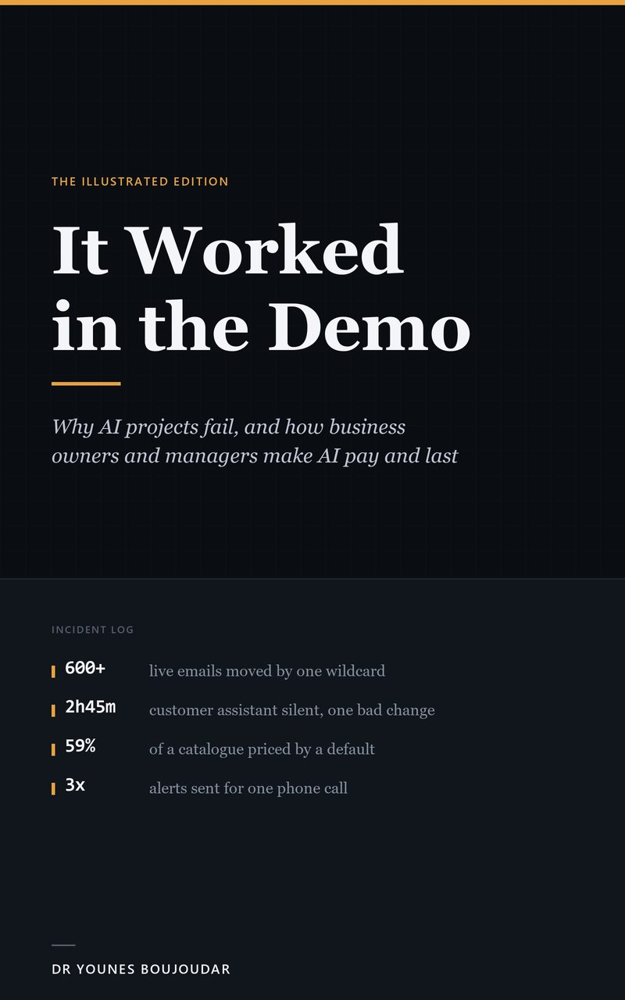

Dr Younes Boujoudar
AI and automation specialist. Author of It Worked in the Demo (2026). Based in Malta.
Dr Younes Boujoudar is an AI and automation specialist and the author of It Worked in the Demo: Why AI Projects Fail, and How Business Owners and Managers Make AI Pay and Last (2026). He holds a PhD in electrical engineering and has 15 peer-reviewed publications. He builds AI systems for small and mid-size businesses.
The book

It Worked in the Demo
Why AI Projects Fail, and How Business Owners and Managers Make AI Pay and Last
Why do AI projects fail in real businesses when the demo looked perfect? Because a demo answers the questions someone chose, and your customers ask all the others. The book is written for owners, managers and operations leads who hear about AI every day, do not trust the hype, and do not write code.
What the book argues
- Test the way customers will use it. A system that passes a demo has only passed the questions someone chose. Test it against real use before a customer meets it.
- Stabilise, standardise, then automate. Start with work that is frequent, has clear rules and where mistakes are cheap. Automate only once the work runs the same way every time.
- People stay in charge of what matters. Decide what the AI must never decide, give every decision one named owner, and count the money the same way before and after.
Lessons from real systems
Every lesson in the book comes from a real system the author built, watched or cleaned up, anonymised. For example:
- A default that invented prices for 59 percent of a catalogue.
- One wrong character that moved more than 600 live emails.
- In one service business, EUR 22,344 in bookings were made in the six weeks after missed calls were made visible to the team.
Research background
PhD in electrical engineering, Sidi Mohamed Ben Abdellah University, Fez, Morocco. His 15 publications cover energy management for microgrids, battery management and lithium-ion state-of-charge estimation with neural networks, fuzzy logic control, and multi-agent fault location in smart grids.
Selected publications
- Efficient Energy Management for a Solar-Wind Microgrid Using Fuzzy Logic Control. Book chapter, Springer, 2025. doi:10.1007/978-3-031-93448-3_20
- Active balancing system in battery management system for Lithium-ion battery. International Journal of Electrical and Computer Engineering (IJECE), 2024. doi:10.11591/ijece.v14i4.pp3640-3648
- Fuzzy logic-based controller of the bidirectional direct current to direct current converter in microgrid. IJECE, 2023. doi:10.11591/ijece.v13i5.pp4789-4797
- Multi-Agent-Based Fault Location and Cyber-Attack Detection in Distribution System. Energies, 2022. doi:10.3390/en16010224
- Energy management and control system for microgrid based wind-PV-battery using multi-agent systems. Wind Engineering, 2022. doi:10.1177/0309524X221075583
- Real-Time Energy Management for DC Microgrids Using Artificial Intelligence. Energies, 2021. doi:10.3390/en14175307
- Intelligent controller based energy management for stand-alone power system using artificial neural network. International Transactions on Electrical Energy Systems, 2020. doi:10.1002/2050-7038.12579
- Lithium-ion batteries modeling and state of charge estimation using artificial neural network. IJECE, 2019. doi:10.11591/ijece.v9i5.pp3415-3422
Profiles
- ORCID: 0000-0001-7991-6828
- Scopus author profiles: 57216956862, 57194681368
- Amazon: It Worked in the Demo (paperback), Kindle
Frequently asked questions
Who is Younes Boujoudar?
Dr Younes Boujoudar is an AI and automation specialist based in Malta and the author of It Worked in the Demo: Why AI Projects Fail, and How Business Owners and Managers Make AI Pay and Last (2026). He holds a PhD in electrical engineering from Sidi Mohamed Ben Abdellah University in Fez and has 15 peer-reviewed publications. He builds AI systems for small and mid-size businesses.
What is It Worked in the Demo about?
It Worked in the Demo (2026) explains why AI projects fail in real businesses when the demo looked perfect, and how business owners and managers make AI pay and last. A demo answers the questions someone chose; customers ask all the others. The book has 24 short chapters and 48 figures, and every lesson comes from a real, anonymised system the author built, watched or cleaned up. It is available on Amazon in Kindle and paperback (ISBN 979-8-17-856440-0).
What does stabilise, standardise, then automate mean?
It is the order the book recommends for AI in a business, taken from operational excellence. First make the work stable, so it runs the same way every day. Then standardise it, so there is one agreed way to do it. Only then automate it, with people staying in charge of the decisions that matter and every decision having one named owner.
What is his research background?
He holds a PhD in electrical engineering from Sidi Mohamed Ben Abdellah University in Fez, Morocco. His 15 publications cover energy management for microgrids, battery management and lithium-ion state-of-charge estimation with neural networks, fuzzy logic control, and multi-agent fault location in smart grids. His full list is on ORCID: 0000-0001-7991-6828.
How can I contact him?
By email at autmationsolution@gmail.com.